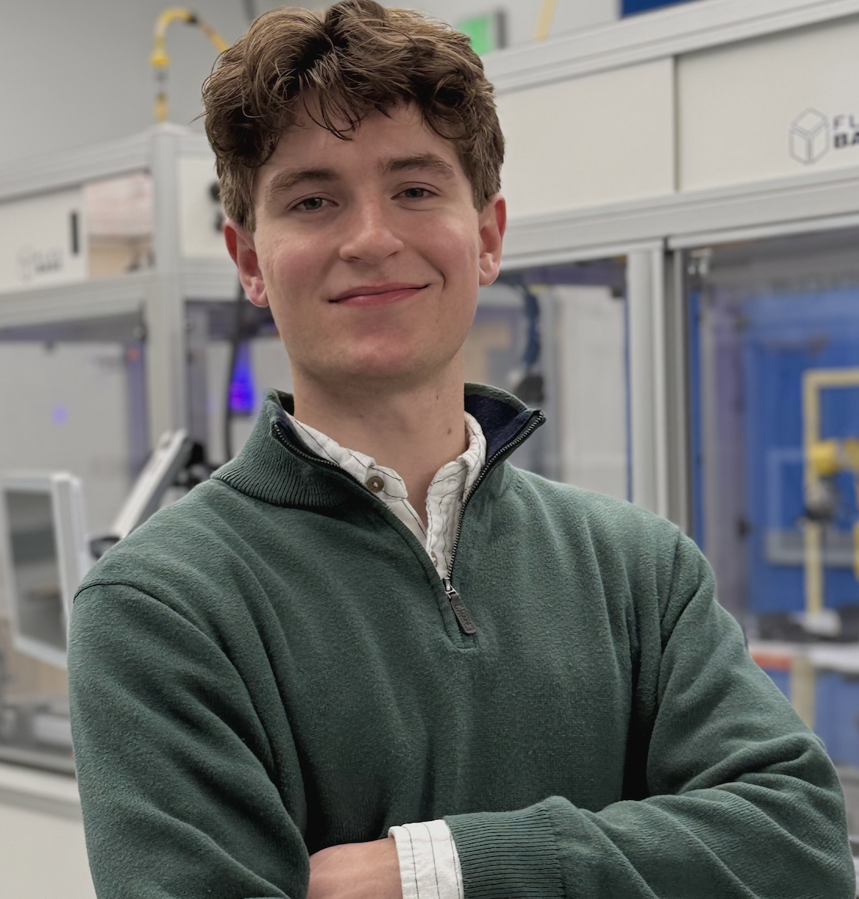
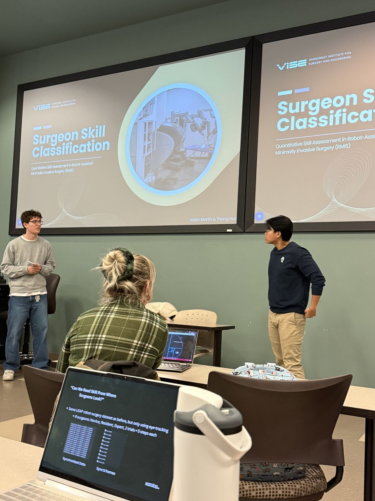
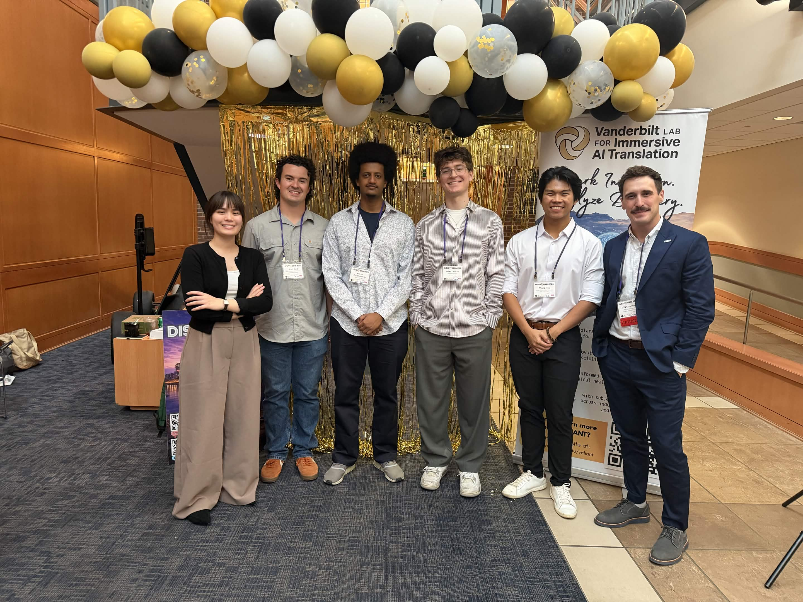
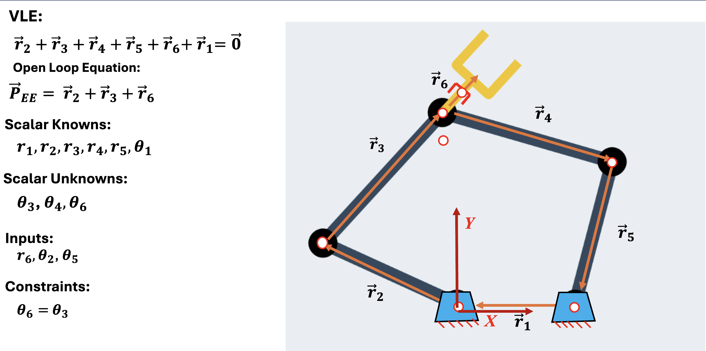
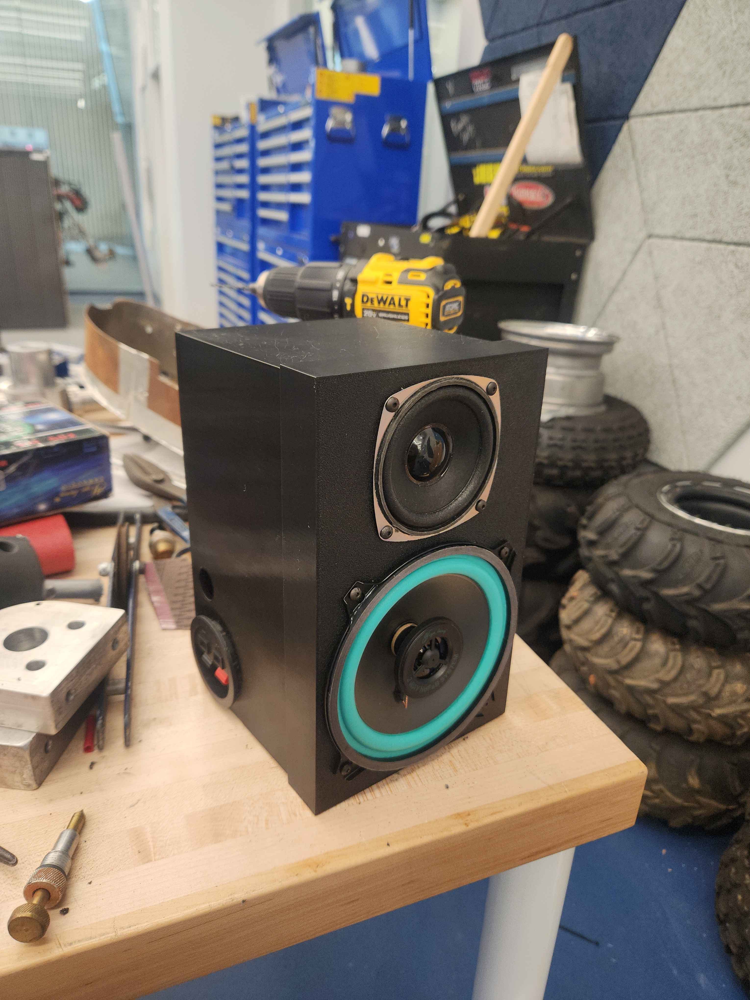
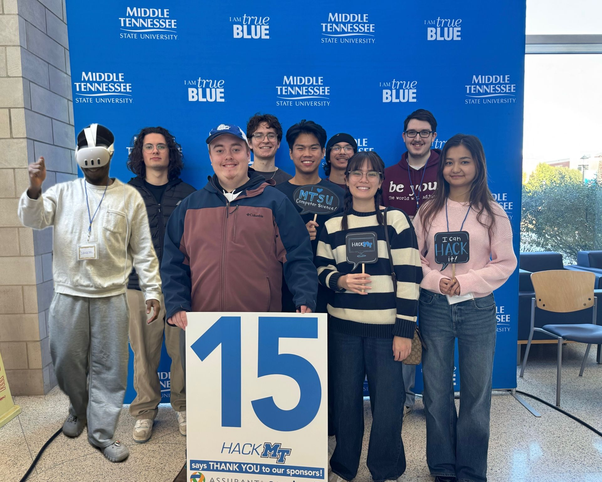

VISE Summer Fellow
Vanderbilt Institute for Surgery and Engineering · 2026
Selected for the VUSE Summer Research Program — 3D kidney reconstruction and optimal control.
Research Assistant · Vanderbilt MAPLE Lab
Bridging the gap between physical hardware and advanced machine learning. My work spans surgical robotics research at the Vanderbilt MAPLE Lab, autonomous competitive robotics, and rapid software development through hackathons. I specialize in Python C++ ROS2 and integrating AI pipelines with kinematic control systems.

I am a Mechatronics Engineering student at Middle Tennessee State University, completing my Bachelor's degree with minors in Computer Science and Mathematics. Alongside my undergraduate studies, my graduate-level coursework focuses on advanced control, reinforcement learning, robotics, and AI.
Concurrently, I am a robotics researcher at Vanderbilt University's Machine Automation, Perception, and Learning (MAPLE) Lab, where my work centers on surgical robotics and machine learning.
My technical passions are rooted in complex algorithmic design — I am actively interested in pursuing work in optimal and robust control, novel learning methods for control, optimization, computer vision, and financial mathematics and engineering.
I look forward to further expanding on these areas this summer during the VUSE Summer Research Program at Vanderbilt, where my research will focus on 3D Kidney Reconstruction and optimal control.
Optimal control, robust control, and learning-based methods applied to robotic and surgical systems.
Perception for robotics — surgical skill assessment, kinematic tracking, and 3D reconstruction from endoscopic video.
Numerical optimization and convex methods grounding control synthesis, parameter estimation, and learning pipelines.
Quantitative finance and financial mathematics — stochastic modeling, optimization, and applied probability.
B.S. Mechatronics Engineering & Computer Science
// taking graduate courses while completing accelerated B.S.
Vanderbilt Institute for Surgery and Engineering · 2026
Selected for the VUSE Summer Research Program — 3D kidney reconstruction and optimal control.
VALIANT · Vanderbilt
Selected as an AI Scholar for the Vanderbilt Lab for Immersive AI Translation.
MTSU · 2026
First place at the 2026 MTSU MechTech award for BalanceCV.
MTSU
Founded and currently lead the MTSU IEEE student branch.
MTSU · SME-affiliated
Leading MTSU's Robotics Club; member of the Society of Manufacturing Engineers.
Hackathon · Team Neural Nexus 6
Recognition from the LIGHTSPEED hackathon for the NeuralNexus6 / Optura submission.
→ View certificate (PDF)Advisor · Dr. Jie Ying Wu
Accepted to the 2026 Vanderbilt Institute for Surgery and Engineering Summer Fellowship — research focus on kidney reconstruction from endoscopic videos.
Connecting skill classification optimal & robust control computer vision to bring interdisciplinary mechatronics perspectives into the MAPLE Lab's surgical robotics research.
Advisor · Dr. Jie Ying Wu
Built deep-learning models — LSTM 1D-CNN TCN — to automate surgeon skill prediction on the da Vinci Research Kit (dVRK). Processed high-dimensional kinematics, contact forces, jerk, and entropy streams in Python; validated and visualized multivariate temporal data in MATLAB.
Advisor · Dr. Hongbo Zhang
Designed and built a six-wheeled moisture-sensing robot for agricultural irrigation. Established wireless MQTT and ESP-NOW networks across ESP32 nodes and a Raspberry Pi gateway. Implemented closed-loop control in Arduino IDE and Python.
Instructed students ages 8–14 on robotics fundamentals — DC motors, microcontrollers, and intro programming.
Original research, autonomous robotics, and full-stack engineering builds.

Multimodal ML pipeline using I3D models and Late Fusion to classify surgeon proficiency (Novice / Resident / Expert) from dVRK kinematic and video data.

A student-led initiative developing a dynamic pickup shelf for quick-service restaurants that uses real-time computer vision and projection mapping to display personalized names and brand art directly onto identical cups.
Interdisciplinary team — Aidan Martin, Bereket Tegistisillassie, Gabrielle Miller, Hernan Hernandez-Chang, Thang Hua, Liam Rudewicz, Brady Reed — drawing on academic research and industry internships in mechatronics, software, and automation. Industry advisor: Will Croushorn, Product Lead for Wendy's FreshAI platform (deployed in 600+ restaurant locations).
Autonomous maze-solving robot. Floodfill algorithm in C/C++ on an Arduino Nano with custom PCB, hardware architecture, and tuned PID control loops.

Forward and inverse kinematics for a pick-and-place robotic arm — full implementation, derivations, and write-up live in the repository.
Geographic mapping and optimization tool that determines ideal locations for new data centers. Combines geospatial data with cost/efficiency optimization.
Real-time 3D path visualization and kinematic analysis for a Fanuc CRX10 collaborative robot — parses URDF joint states over Ethernet/IP.
Computer-vision based object detection driving an automated sorting mechanism — vision pipeline integrated with physical actuation.
Computer vision application focused on balance and kinematic tracking. Skeletal pose estimation applied to stability analysis.

Academic analog electronics build — audio amplifier circuit using the TDA2030 and LM386 ICs, packaged into a custom CAD-modeled enclosure.
Six-wheeled agricultural irrigation robot built at the MTSU Optics & Mobile Robotics Lab. Wireless ESP32 ↔ Raspberry Pi mesh over MQTT and ESP-NOW with closed-loop drive control.
Rapid prototyping, hackathon submissions, and supporting software projects. // edit copy freely
Synthetic healthcare data generator and AI chatbot for HIPAA-compliant datasets using tensor decomposition.
Mechatronics & automation programming for industrial Festo handling stations — sensor sequencing and PLC-style control.
→ GitHubAI-powered document processing and analysis application — extraction and summarization over uploaded documents.
→ GitHub
Collaborative hackathon software project — full-stack build with teammates.
→ GitHubTyping test / keyboard input application — input timing analysis and live feedback.
→ GitHub